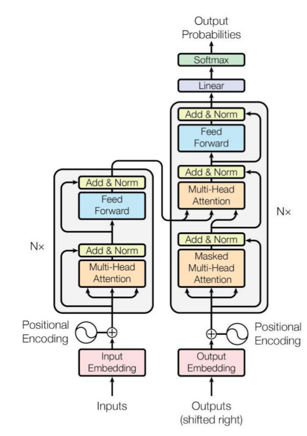
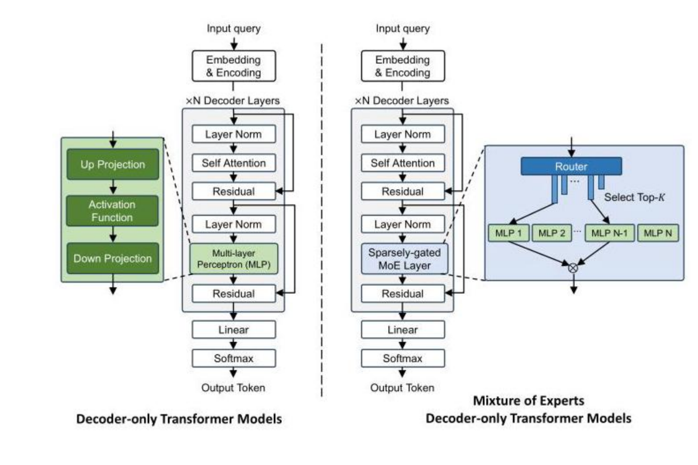
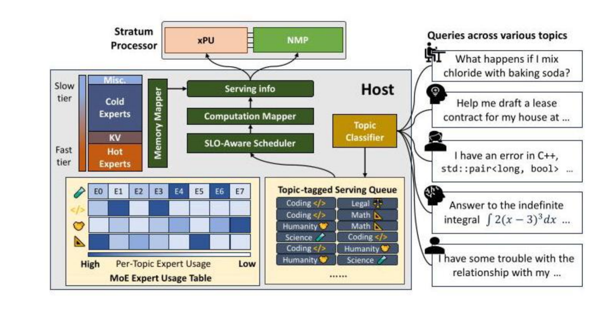
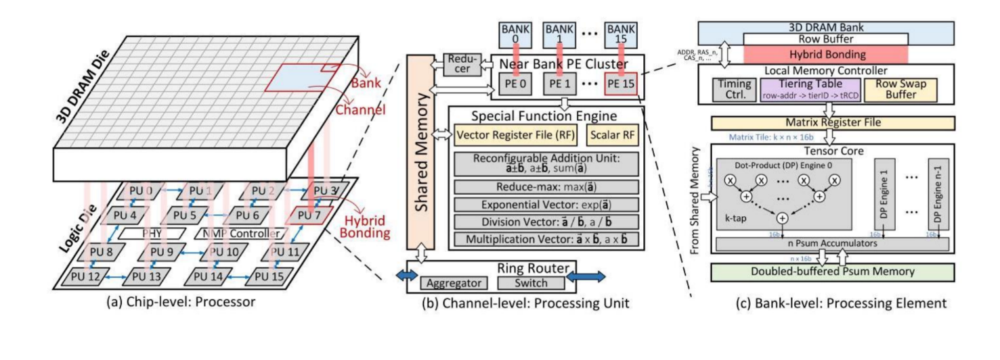
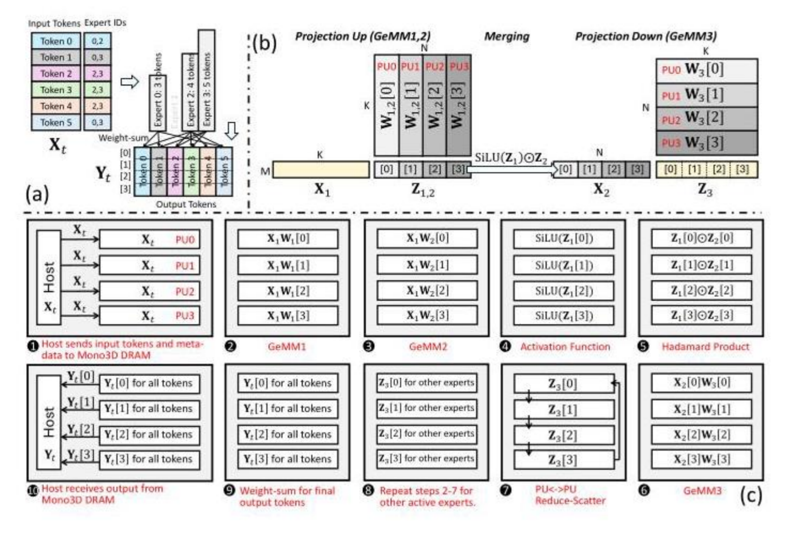
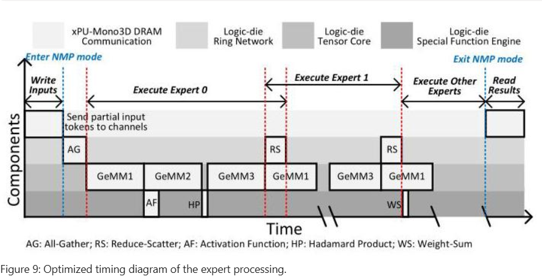
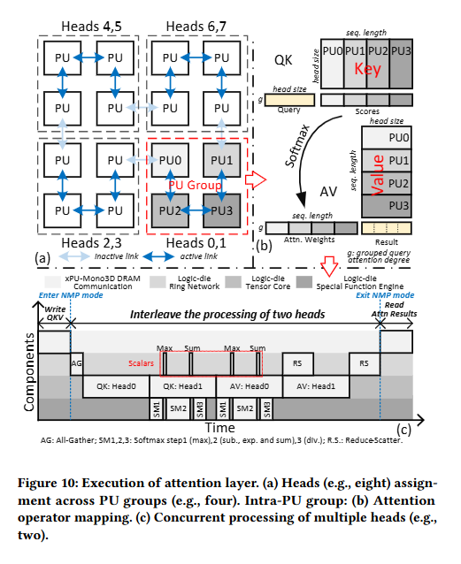
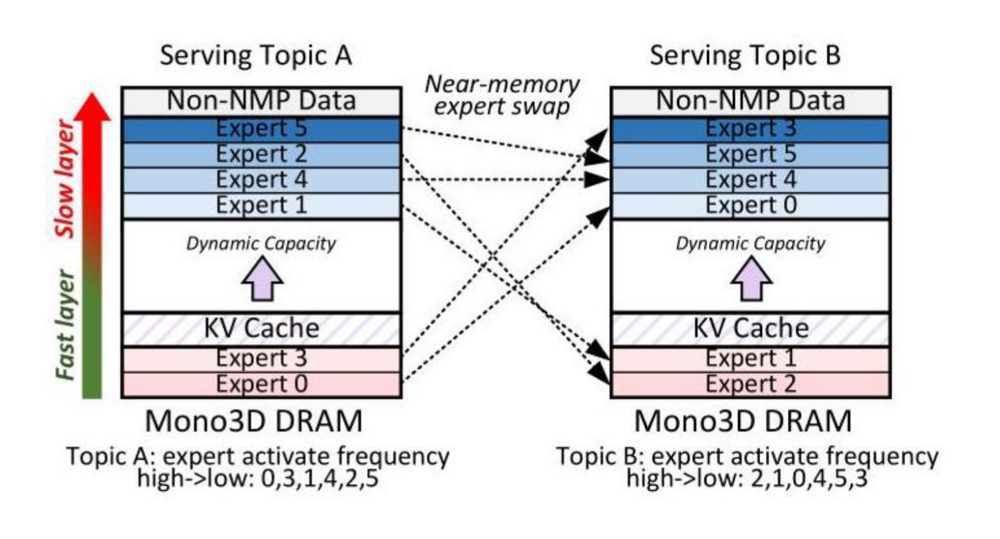
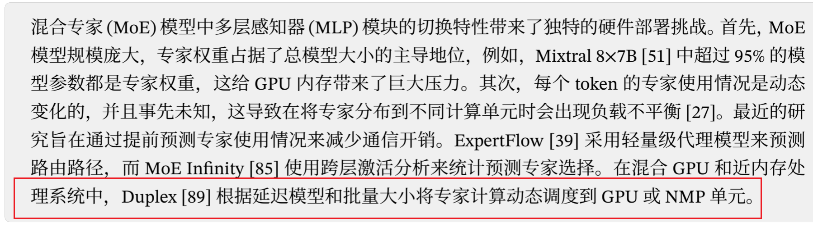

-
Attention Is All You Need [pdf](file:///E:/thesis/MoE/Attention_Is_All_You_Need_2025-08-05-11_49_11.pdf “pdf”)
- $Key、Value、Query$，是注意力层从左到右的三个输出，在自然语言处理中，key和value是同一个，query表示当前输入向量，通过query和key进行操作，得到加权系数，再用加权系数把value聚合得到最终的注意力分数
- K、Q相乘使用得到的值除以$\sqrt{d_k}$,可以防止随着维度变大，导致softmax得出的值过大或过小。
- 加法注意力可以捕捉非线性关系，表达能力更强，但运算更慢，大模型中使用成本较高。
- 多头注意力机制中，每个头得到的输出直接拼接，根据我的理解，向量的每个维度都有特定的含义，因此采用拼接会让每个头只关注某一特定特征，变得更加专（有点像CNN里面的多通道，也有点早期专家合作的感觉，最后可学习的线性变换矩阵充当路由器）。
- 由于注意力层没有对时序信息进行建模，因此需要添加额外的信息弥补这一缺陷——位置编码，感觉可以通过它进行掩码操作，但矩阵天生包含了时序信息，更方便些。
- 位置编码采用不同频率的三角函数波，频率由位置决定，巧妙的设计——任何位置的向量，都可以由其前面的向量通过线性组合得到，非常有利于注意力机制的学习。
- 解码器输出矩阵经过线性层映射到词汇表空间，再利用softmax得到每个词汇的概论，最终采取些选择措施就得到了结果。

-
Adaptive Mixtures of Local Experts [pdf](file:///E:/thesis/MoE/Adaptive-Mixtures-of-Local-Experts_2025-07-30-21_13_55.pdf “pdf”)
- 出发点是任务可分为多个子集，进而不同专家单独更新参数，不知道是怎么划分任务，分配给专家？
- 原始损失是将专家输出加权后与实际比较，改进后的变成了比较再加权，独立性更加强了，进一步的改进整体方向相同，只是在数学上做了些处理，让导数中添加了误差权重。
-
OUTRAGEOUSLY LARGE NEURAL NETWORKS: THE SPARSELYGATED MIXTURE-OF-EXPERTS LAYER
- MoE与RNN相结合，实现超大参数模型，相比于上一篇，门控网络的输出会前往专家，用以激活其计算，并且输出也会作用于专家输出。
- 在路由层加入噪声机制和稀疏性，噪声保证均衡性，让没那么专的专家也可以用上场；稀疏性保证计算需求没那么大。同时设计一个新的损失函数，通过衡量专家的重量程度，来鼓励系统对这方面进行优化。最后对于噪声再加以利用，利用其计算每个专家被选择的概率，用以衡量每个专家的负载可能，连续化其负载量，通过反向传播优化。
- 为了解决每个批次训练，实际只有很少数据在计算的问题，引入数据并行，不同机器负责部分专家，其它机留下自己专家需要计算的数据，将其余数据传送至对应机器上，反向传播也是如此（感觉实现技术要求比较高呀）
- 带宽问题，通过添加MoE的隐藏层，以增加每个批次的计算量，从而提高通信的性价比。
-
GShard:ScalingGiantModelswithConditional ComputationandAutomaticSharding
- 文章主要瞄准工程性问题——并行计算能力，同时对负载均衡做了些限制——硬约束，每个专家最多负责K个token，如果某个token选中的两个专家负荷都满了，就通过残差连接进入下一步；本地分组调度提高计算利用率（但感觉会和分片机制冲突，可能需要通过工程解决）；也同样有上一篇论文的专家重要程度的损失函数；最后还有个随机路由，可能不同论文有不同视角，所以相同的机制这儿可以另外一个地方不可以。前一篇文章用top-k，防止某个专家过于强大，这篇文章采用随机路由，节约资源。
- 后续AI infra内容待看。
-
Switch Transformers: Scaling to Trillion Parameter Models with Simple and E cient Sparsity
- 算法改进为使用top-1路由，可以减少前向传播计算量与片间通信代价，实验中发现丢弃一部分token，可以增加模型表现。
- 使用蒸馏技术，将非moe层参数复制给学生，并且监督信号更加侧重真是标签
- 数据、模型、专家并行
- 尝试将自注意力层也使用moe架构，query不变，但key和value由不同专家给出，结果质量更高，但存在训练不稳定问题，未来值得探索
- 鼓励专家间的探索，加入噪声比较有效
-
ST-MOE:DESIGNINGSTABLEANDTRANSFERABLE SPARSEEXPERTMODELS
- 针对训练稳定性，修改激活函数，使用GEGLU激活函数，并且归一化使用RMS；使用路由z损失（不是简单的截断，而是鼓励模型生成更小的logits），保证数值稳定，和交叉熵损失、辅助负载损失一齐提高模型质量。
- MoE的超参比较重要，对模型表现影响较大
- 丢弃部分token不影响模型的表现
- 实验说明稀疏层后加入FFN层能够有效提高模型表现
-
GLaM:EfficientScalingofLanguageModelswithMixture-of-Experts
- 采用单decode结构
-
DeepSeekMoE: Towards Ultimate Expert Specialization in Mixture-of-Experts Language Models
- 终极专家专业化，为解决知识冗余、知识混合，采用细分专家、共享专家
- 细分专家把专家参数减少、专家数量变多
- 共享专家设置每次必选一个专家，有点像加工了的残差
-
A Survey on Inference Optimization Techniques for Mixture of Experts Models
- 优化方法分为模型级、系统级和硬件级优化。在模型层面，我们研究架构创新，包括高效的专家设计、注意力机制、各种压缩技术，如剪枝、量化和知识蒸馏，以及算法改进，包括动态路由策略 和专家合并方法。在系统层面，我们研究分布式计算方法、负载均衡机制和高效的调度算法，以实 现可扩展的部署。此外，我们深入研究特定于硬件的优化和协同设计策略，以最大限度地提高吞吐 量和能源效率。
- 模型：高效模型架构设计、模型压缩技术和算法改进。架构从注意力层和专家层着手，前者就是字面意思，后者是融合其它领域的知识进来，例如预取技术、树索引等。压缩有剪枝、量化、蒸馏、专家分解等，剪枝主要为融合与去除，直观感觉融合专家有效果些，量化将精度变小，精简参数，蒸馏提炼参数
- 算法：AdapMoE[226] 是一个旨在提高边缘设备推理效率的协同设计框架。它自适应地应用三 种技术: 专家激活、专家预取和 GPU 缓存分配。表 4 展示了这些工作在性能和方法上的综合比较。 DA-MoE[3] 引入了一种源自注意力机制的词元重要性预测方法来指导专家分配。
- 系统：并行策略、负载均衡、全对全通信和任 务调度——Alpa[225] 基于不同并行化技术对通信带宽需求不同这一 关键观察结果，将传统的数据并行和模型并行重新分类为算子内并行和算子间并行。Lazarus[193] 使用一种最优分配算法来分配专家副本，该算法为热门专 家分配更多副本以帮助平衡负载。FlexMoE[123] 采用细粒度复制策略，选择特定的繁忙专家并在 多个设备上复制它们，在运行时动态调整专家到设备的映射以解决路由不均衡问题。全对全通信看不懂；任务调度解决计算任务与通信任务的重合
-
Stratum: System-Hardware Co-Design with Tiered Monolithic 3D-Stackable DRAM for Efficient MoE Serving
- 背景知识：MoE是为了拓展稠密模型推理成本过大导致无法继续扩展参数数量，因此想要将熟悉同一领域的参数抽离出来，构成专家，在此指导下设计如下结果，以小的多的推理成本实现巨大参数模型

- 由于在解码阶段,不同token激活不同专家，同时访问不规则，批量小，缓存失效，因此在GPU中内存受限，计算核心存在闲置现象。HBM与计算核心中传输速度仍不满足计算强度，需要更加快的传输，于是有工作将计算核心放的离HBM“近一些”，但受TSV限制；有将计算核心放进DRAM（PIM），但DRAM本身设计于存储，工艺开销大，且存在内部通信问题等，因此论文使用新型Mono3D DRAM内存技术，结合前两者的优势，提高吞吐量。


- 上图一是推理系统整体架构，其中SLO以用户感知第一个token生成优先，因此会把同一主题的专家聚合在一起进行计算；同时GPU和NMP中有高速互联（专家参数暂时认为存在NMP中）；图二为NMP中架构，3D DRAM与PU间通过垂直通道连接，PU间有环形网络，用于快速规约等操作，同时在PU内部，计算核心与通信核心分开的，因此后续计算与规约可以重叠节省时间
- 对于专家层计算优化：专家层主要是三个矩阵相乘，因此可以利用并行进行优化，这里选择的是张量并行而未选择专家并行，原因是由于多层DRAM访问速度不一样，不同PU处理不同专家可能出现负载不均衡，由于专家结果需要规约，一个计算慢会拉低整体效率。
- $\mathrm{Expert}{\mathrm{SwiGLU}}(x,W,)=\left[\mathrm{Swish}(xW{gate})\odot(xW_{up})\right]W_{down}$

a为路由情况，b为专家层内部的计算，利用的是当前最常用的SwiGLU激活函数，这里涉及到三个矩阵乘法，因此论文对这里进行展开优化。将参数矩阵进行切分，然后就可以进行张量并行了，如图b所示，同时在PE维度上，会按照更长的维度进行切割，尽可能让PE不处于闲置，（即W1,W2内部是以行划分，W3按列划分）。c图展示的是具体过程。只有在得到最终结果时才需要进行规约，减少通信消耗。

流水线操作中，首先把隐藏状态从GPU传入到3D DRAM中，系统为了加快速度，将隐藏状态也进行了切片，后续进行全收集操作的同时让每个PU都知道隐藏状态。然后进行升维与门控矩阵乘（这里我认为是可以堆叠一部分计算时间的，因为相互之间没有耦连关系），同时对门控结果进行激活是与矩阵2计算有堆叠，HP为矩阵元素乘，得到结果后即可进行第三个矩阵乘法，然后当前结果规约可以与下一个token的计算重叠，当计算完毕时，权重进行一次聚合就得到一个专家对当前token的一个输出，同时进行下一个专家输出，最终得到结果时传输给GPU进行前向传播。
1 |

由于多头注意力的存在，其也存在并行计算的空间，将多个PU进行分组，分配给对应头（计算组中的PU数可以动态调整，只要是邻居就可以放在一起），一组分配至少两个头，可以带来计算的堆叠。在计算组内，K和V的分配与前面又不谋而合了，同时由于softmax可以分开计算，（利用flashattention中的原理）无需担心softmax失真，利用环形网络进行标量交换即可。在图c的流水线中张量计算核心中QK和AV的计算是交错的，在下个头计算时，可以堆叠上一个头的softmax计算（所以每个计算组至少两个头），关键原理是PU中有多种特殊计算器件，可以各自执行相应操作。

根据不同主题专家使用频率，将常用专家放到更快的层；内存管理也同样如此，快慢之分，通过系统去感知。
问题：对于和系统挂钩的实验，该如何有效快速判断这个点子行不行呢？例如本文提到的系统，阅读是只觉有道理，其中细节无法明了，似乎设计更多是针对当前硬件

下一步待看